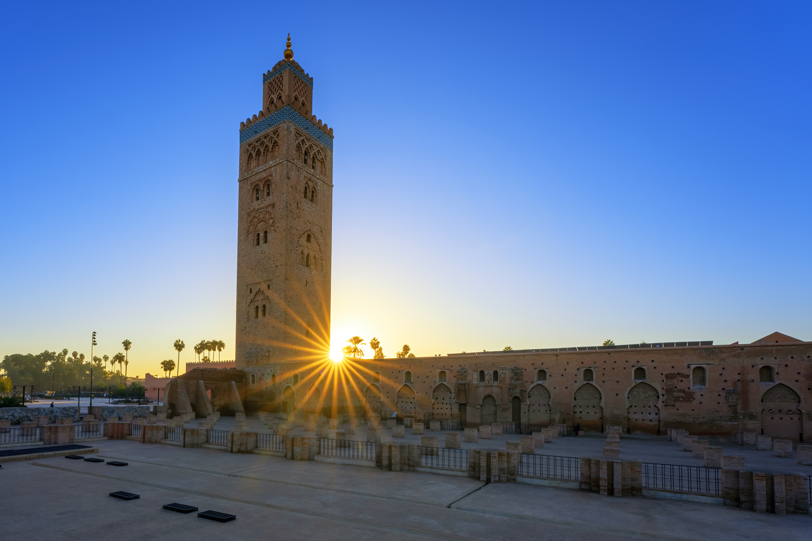

Marrakech: La Ciudad Roja
Marrakech es conocida como la "Ciudad Roja" debido al color ocre y rojizo de sus murallas, edificios y el suelo de arcilla, una característica que viene de una antigua normativa urbana y que le da un aspecto único, combinando historia, vibrantes zocos, palacios y una rica cultura, siendo un destino icónico de Marruecos. Es una de las Ciudades Imperiales, famosa por su medina (ciudad antigua) Patrimonio de la Humanidad, plazas como Jemaa el-Fna, mezquitas como la Koutoubia, y sitios históricos como el Palacio Bahia, ofreciendo un mosaico de tradición y modernidad.